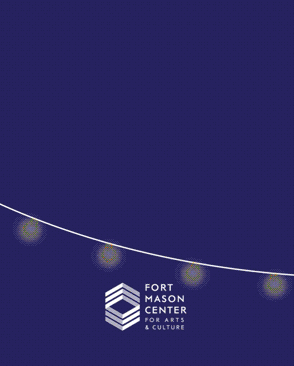
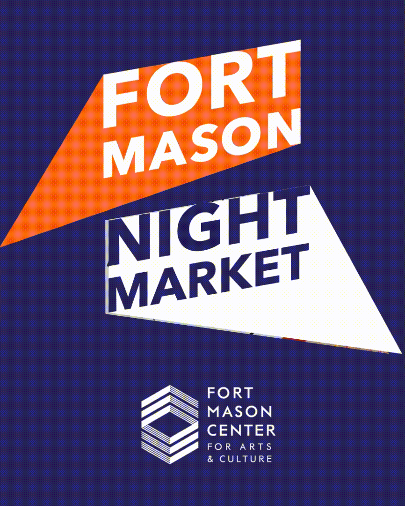
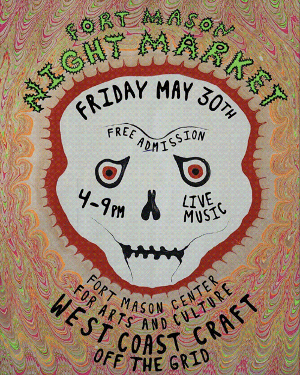
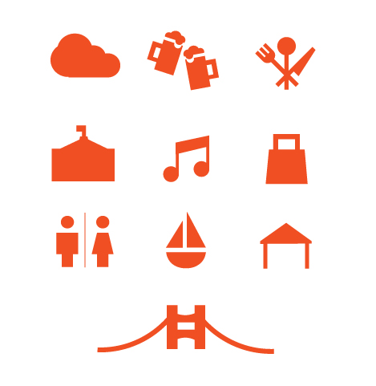
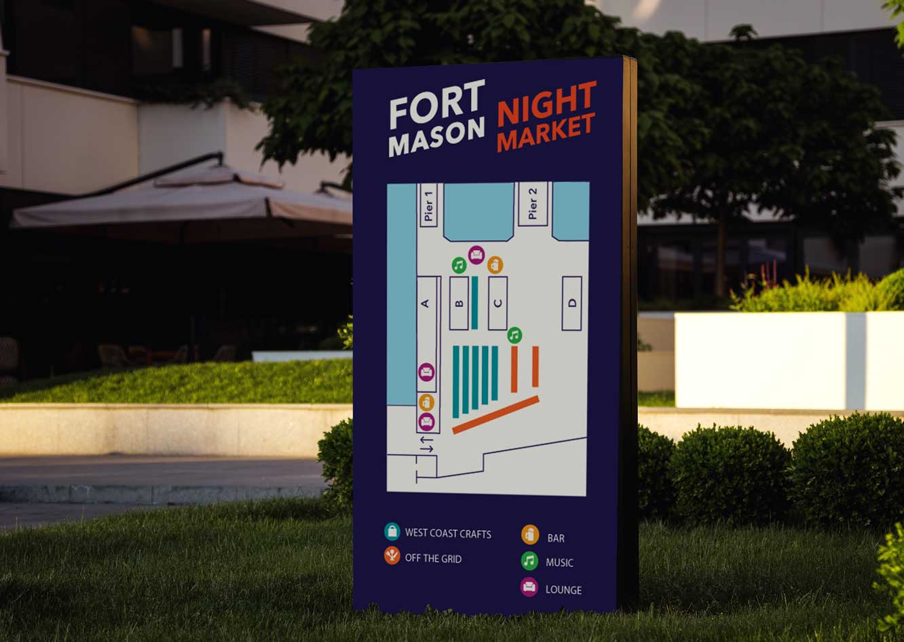
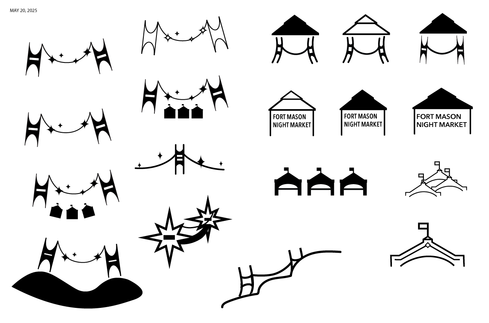
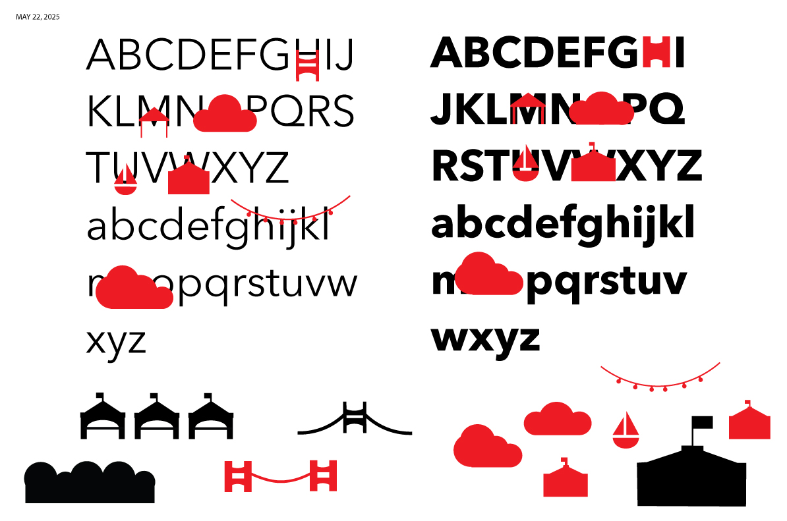
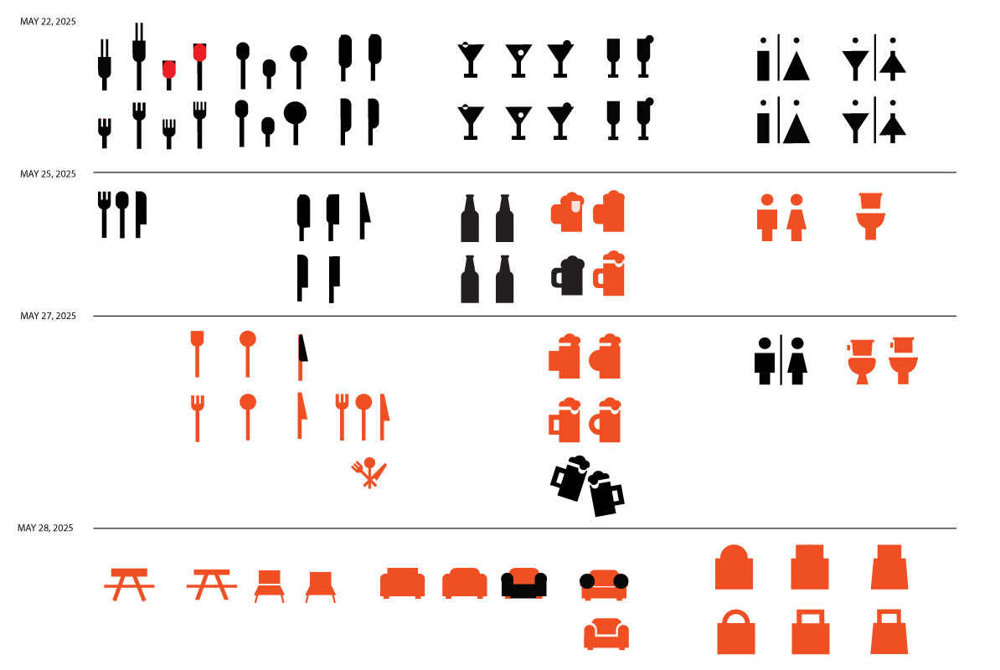
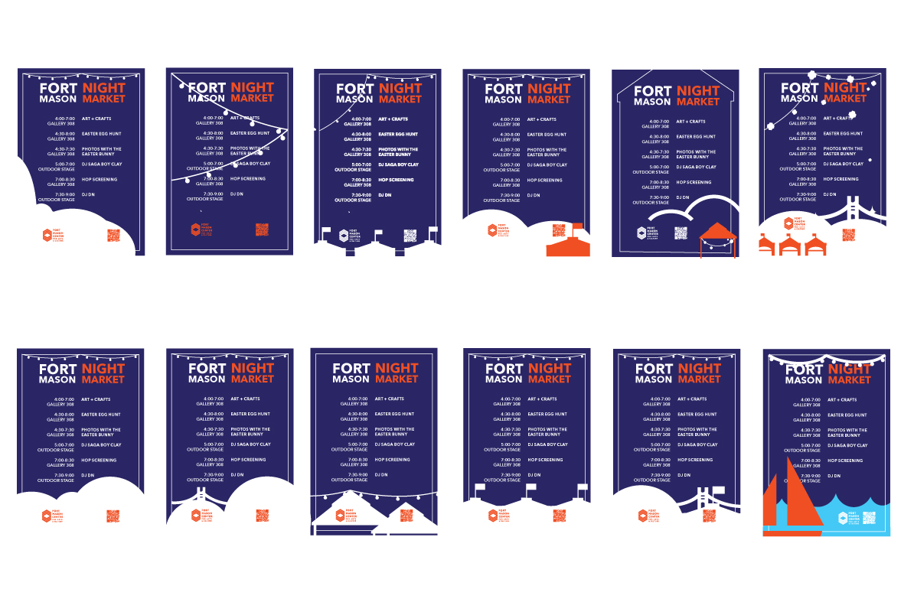

Fort Mason Night Market is an exciting monthly market in collaboration with Off the Grid and West Coast Crafts to bring together a wide range of food vendors, local artisans, and entertainment against a backdrop of stunning views of the bay. I worked with Graphic designer, Jennifer Sonderby as her junior designer, discussing the identity, designing posters, icons, and a motion campaign.
PROJECT INFO
Identity Design
2025
2025
TOOLS
Illustrator, After Effects

Motion Graphic Campaign
Part of my responsibilities for this project was creating a motion graphic, which can be found on the fort mason instagram and website. This graphic was designed to be a base which they can easily swap out the information and poster for each month’s event!


ICONS
I designed an icon set for the night market. Each icon was designed based on the identities typeface and was made to reflect different parts of what makes the Fort Mason Night Market special. The icon system features silhouettes of the iconic Fort Mason buildings, clouds, a sailboat, and the Golden Gate Bridge to represent the location. Additional icons—including beer, utensils, music, shopping, booth tents, and a restroom symbol—identify the different aspects of the event. Together, these icons function as a cohesive wayfinding system for the night market.

PROCESS
This project gave me a lot of valuable experience working in collaboration with a Senior Designer. I took suggestions and guidance from Jennifer, while giving my own input and exploring my own ideas, and together we created the identity for this event. In this short month, I worked consistently both on my own and through meetings with Jennifer Sonderby.


